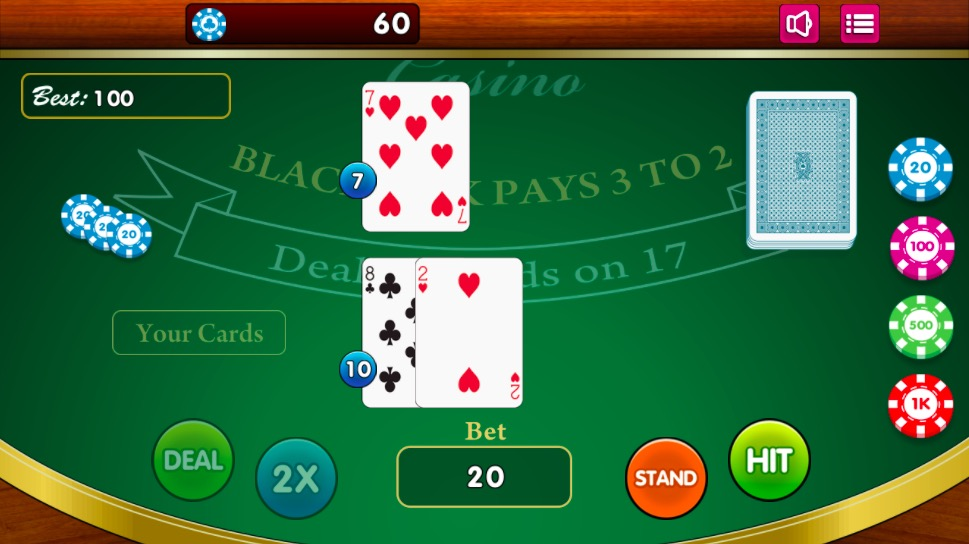
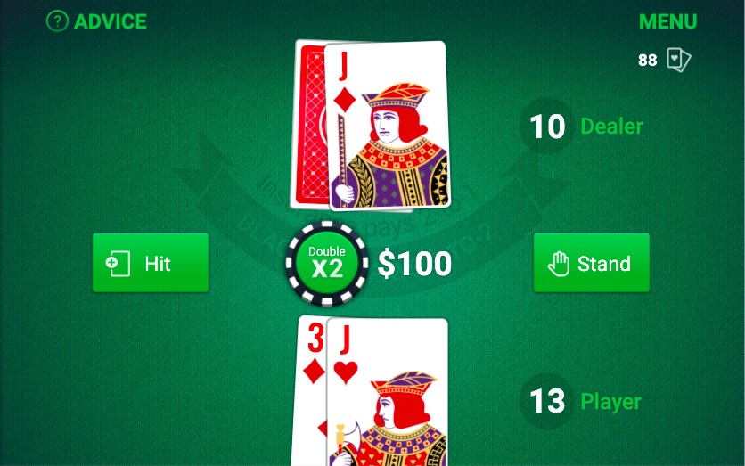

Project Summary
I am changing the pig game to a simplified and educational version of the game blackjack for children that is easy to understand for the learning of addition and number counting. I will be updating studio project 3, Game On.
Comparison Project 1
 Link to Free Games' BlackJackThis version of blackjack from a first glance seems a bit outdated. The game is just a normal version of blackjack with betting using poker chips. The graphics and interface are probably what make it seem the most outdated. The colors are very bright and the buttons and overall visuals of the website seem somewhat tacky. The gameplay of the game is smooth though, the animation of the movement of the cards and chips enhances the experience. There are also sound effects of the cards and poker chips that also work well with the gameplay. The website’s gameplay of blackjack itself is very smooth and easy to use for the user, but the graphics and overall looks of the site seem outdated and a bit tacky.
Comparison Project 2
 Link to Washington Post's BlackJackOn the Washington Post’s game tab of their website, there is an online version blackjack that is free for users to play. This game also looks a bit outdated, but it is not as tacky as the other version of the game. The graphics could be updated to look a bit more modern and the colors are very bright, but it is slightly understandable and relates to the casino theme. The graphics of the cards and the chips look pretty clean. The gameplay and experience of this game are also enhanced by the sounds of the cards and chips, but there is music in the background that is loud and may be overwhelming to the users. The movement animations of this blackjack version are also smooth and improve the gameplay and visuals of the site. Overall, Washington Post’s version of blackjack has a good overall experience for the users, but the graphics could be improved by a more modern design.
Project Goals
My goal for this project is to create an educational and simplified version of blackjack to help children and other people with learning simple math. I’ve often heard that playing blackjack helps people, especially children, with learning basic addition through the repetition and nature of the game. I plan on taking out the betting aspect of the game, to make it more kid-friendly. The two comparison projects are different because they seem to have an older target audience, with the inclusion of the gambling aspect. Since I also do not want to encourage gambling, especially to a young audience, I plan on taking that out. The other comparison websites also seem a bit outdated and the graphics are very detailed and a bit tacky looking since the websites are casino-themed. In my version of blackjack, I plan on making the graphics simple and minimalistic, just enough for children to understand. I may also take out the face cards Jack, Queen, and King, to make it easier and simpler for children to learn the game. Overall, I plan on turning blackjack into a kid-friendly and educational game to help with practicing basic math.
Design Strategies
I plan on making the overall theme simple and minimalistic. Like the other comparison projects, I plan on using a green background to stick with part of the blackjack casino theme and add contrast to the figure/ground relationship, but I will probably mute the green and make it slightly lighter in order to make it more appealing to the users' eyes and less tacky overall. Other than the green, I will probably use other shades of green, grey, and black, and white to keep it simple. I also plan on using negative space to make the design more simple. Typography-wise, I am considering using either Playfair Display and/or Italiana for a clean look that also sticks to the blackjack theme.
Interaction Strategies
I will probably keep some of the interactions I added in the game on code, such as the code for the buttons and instructions overlay. I also plan on adding audio effects, such as the shuffling and dealing of cards. I will probably make it a single-player game, unlike the pig game, in order to better fit my goal of the website. Blackjack is pretty simple, so I think that most of the code will be related to the randomization and interaction of the cards since there are a lot of cards in a deck. I might also try to add some animation in there, either the movement of dealing the cards or flipping the new card over.
Experience Goals
My goal is for the game to be an easy-to-understand and easy-to-play version of blackjack that is simple so the experience is not overwhelming to the users. I am trying to target an audience who wants to practice basic math while having fun or people who want to play blackjack without the gambling aspect, therefore I will make the design pretty simple for better understanding and cleaner gameplay. I also plan on stripping blackjack to its essential rules in order to simplify the game and not overcomplicate it. Overall, I want the experience of the game to be fun, but also not too complicated.